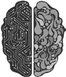
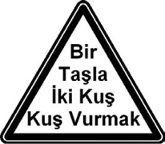
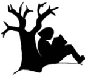
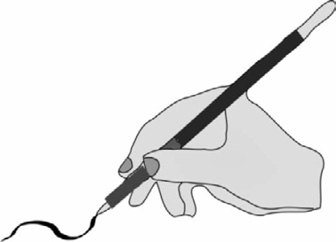
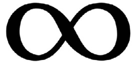
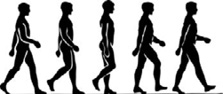
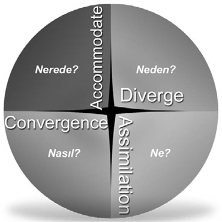

Beyin Yarıları - Sağ ve Sol Beyin

Beynin yapı olarak en temel ayırımını sağ ve sol beyin olarak yapılabilir.
Beyninde hangi lobun etkin olacağı yüzde otuz oranında doğuştan belirleniyor. Ancak yüzde yetmişi çevre, aile ve eğitim faktörlerine göre gelişiyor.
Beyin yarıları denilince, beynini biyolojik olarak ikiye bölünmüş bir beyin olarak değil, birbirlerine bir bağ ile bağlı, uyum içerisinde çalışan iki beyin yarısı olarak düşün. Beynin her iki kısmı, birbirine Corpus Callosum adı verilen bir sinir ağıyla bağlantılıdır. Bu bağlantı ile loblar, aynı girdiden farklı programlar çalıştıran iki bilgisayarmış gibi davranırlar. Çünkü sağ ve sol beyinlerin uyumu yoksa sol taraf sağ tarafın, sağ taraf da sol tarafın algıladığını alamıyor.
Beyninde hangi lobun etkin olacağı yüzde otuz oranında doğuştan belirleniyor. Ancak yüzde yetmişi çevre, aile ve eğitim faktörlerine göre gelişiyor.
Beynin Sağ ve Sol Loblarının Özellikleri:
Sağ Beyin:
Sağ Beynin İşlevleri:
Sol Beyin
Sol Beynin İşlevleri:
Her iki beyin de kendi algı filtrelerine en uygun zihinsel işleyiş düzeninde çalışıyor. Bilinçli zihnimiz herhangi birinden gelen veriye bir filtre uygulamadan odaklanınca, bu durum aleyhimize de gelişebiliyor.
Eğer şu an beyninin tek lobunu baskın olarak kullanıyorsan; bu durum, diğer lobun çalışmadığından ya da doğuştan yeteneksiz olduğundan değil, sadece beyninin bu yarısına, gelişmesi için, diğer yarısından daha çok olanak tanımış olmandan kaynaklanıyor.
Beynin sağ lobu duygular ve hayallerin etkisinde ve bütünsel öğreniyor. Bu yüzden bilgileri sırayla işleyen sol loba göre daha hızlı ve etkili bir işlemden geçiyor. İnsanın mucitlik ve üretkenlik kısmını sağlayan da sağ beyindir. Sadece sol lobunu etkin kullanan birisinin yaratıcı düşünebilmesi ve üretken olabilmesi için sağ beynini de geliştirip her iki yarının uyumlu çalışmasını sağlaması gerekir.
İşte beyin yarıları etkileşiminin bize sağladığı da tam olarak budur.
Beyin dış dünyadan gelen verileri, baskın olan yarı lobunu kullanarak işliyor. Öğrenme ve düşünme sürecindeki başarı, her iki yarının dengeli bir şekilde kullanılmasını gerektirir. Her iki lobun düşünce süreçlerine katılabilmesi, beyin yarıları uyum egzersizleriyle geliştirilebilir. “Beyin Yarıları Korelasyonu” da diyebileceğimiz bu egzersizler bölüm sonunda yer alıyor.
Beyin Yarıları Baskınlığı
Aynı veriyi farklı şekilde yorumlayan sağ ve sol beyinden hangisini kişi tercihli olarak kullanıyor ise, o lob diğerine göre daha baskın demektir. Aynı bilgisayarda bulunan farklı arama motorları vardır, ancak alışkanlıklarımız bize, hep aynı arama motorunu seçmemiz gerektiğini söyler.
Sağ ve sol beyin yarılarından hangisini baskın olarak kullandığını test eden bir uygulama yapalım:
Şimdi şekildeki uyarı levhasında yer alan tekerlemeyi olağan hızda okumanı istiyorum.

Eğer kolayca “Bir Taşla İki Kuş Vurmak” şeklinde okuduysan, hemen sağ beynini geliştirme ve sağ-sol korelasyon egzersizlerine başlamalısın!
Önceden kodlanıp kalıplaşmış bilgiler, hemen beyninin sol bölümünü harekete geçirir. Bu yüzden dikkatin dağılarak yanılsamaya zorlanırsın. Okumayı yeniden dene!
Beyin yarılarının baskınlığı daha objektif olarak bir anket uygulaması ile bulunabilir. Beyninin hangi yarısını baskın olarak kullanıyorsun? Sonucu www.nlpbus.com adresindeki anket uygulaması ile öğrenebilirsin.
Sol Lob Baskın İse, Sağ Lobu Geliştirmek İçin;
Sağ Lob Baskın İse, Sol Lobu Geliştirmek İçin;
Zayıf olan lob, baskın olan lob ile işbirliği içerisinde çalışması için uyarıldığında yaratıcılık yeteneğinde muazzam bir artış olur. Sol beyni gelişmiş bir kişi sağ beynini de geliştirirse beyninin bilgi işleme kapasitesi aritmetik değil, adeta geometrik bir artışla büyür. Çünkü beyin standart matematikten farklı bir permütasyon matematiği kullanıyor. Beynin kapasitesi iki kat değil, hayal bile edemeyeceğimiz kadar artar.
Beyinde öğrenmenin sonu yoktur diyorum, bunu kanıtlayabilirim. Bir insanın yüz milyar değil de, sadece on iki adet nöron hücresi olduğunu varsayalım. On iki nöron hücresinin birbiri ile kurduğu bağlantı sayesinde dört yüz elli milyon bilgi öğrenilebiliyor. On iki nöron hücresi yerine, nöron sayısını sadece bir arttırıp, on üçe çıkardığımız zaman bağlantı sayısı altı milyara çıkıyor. Yani bir tane nöron artışı ile beş buçuk milyar bilgi artışı gerçekleşiyor.
İnsan beyninde yüz milyardan fazla nöron hücresi olduğuna göre, yeni bağlantı sayısı hakkında bir tahminde bulunabilir misin? Sonsuz sayıda bilgi çıkıyor değil mi? İşte bu yüzden beynin sınırsız öğrenme gücü vardır diyorum. İşte bu yüzden ona hayranlık duyuyorum.
Bu bulguların en iyi örneği herkes tarafından, tüm zamanların en büyük beyinlerinden biri olarak kabul edilen Leonardo da Vinci’dir. Leonardo, tarih boyunca eşine az rastlanır bir, çok yönlülüğe sahiptir. Bir bilim adamı olarak; matematik, mimarlık, dil, mantık, anatomi gibi alanlarda olağanüstü derecede iyiydi. Leonardo, hayal gücü, renk, resim, ahenk, müzik ve şekil kullanma kabiliyetlerinde de çok iyiydi. Bu durum onun beyninin her iki yarısını da aynı anda uyumlu biçimde kullanabildiğinin bir kanıtıdır.
Sağ ve sol beyin birbirini tamamlayan fonksiyonlara sahiptir. Beyin yarıları uyumu (korelasyon) çalışmalarından çıkan gerçek; her birimizin potansiyel olarak birer bilim insanı ve sanatkar oluşumuzdur. Yeter ki, sahip olduğumuz potansiyeli açığa çıkaran NLPBUS© korelasyon egzersizlerini inanç ve sabırla uygulayalım. Her birimiz bu egzersizlerle dengeli bir beyine sahip olabiliriz.
Sağ ve Sol Lobu Korelasyon İçinde
Çalıştıran Egzersizler:
Bedensel Eklemleme Egzersizi
Ellerini göğüs ve bacak üzerine çapraz bir biçimde koyarak sıra ile ve hızla ondan geriye doğru sayarak değiştir.
Kollarını ve ayaklarını hızlı biçimde ondan geriye doğru sayarak çapraz hareket ettir. Sonra da bir bardak su iç.
Beynimizin sağ tarafı ile sol tarafını ilişki içerisine sokuyoruz. Çünkü sol taraf sağ beyin, sağ taraf sol beyin tarafından kontrol edilir. Beynimizin içine girip bu bağlantıyı kuramayacağımıza göre, bunun için sağ ve sol ayaklarımızı kullanıyoruz sonra da su içiyoruz.
Amaç bedenin parçalarının birbiri ile etkileşime geçmesini sağlamak, zihin ve beden uyumunu gerçekleştirmek... Bedeninin sağ tarafını sol, sol tarafını da sağ kısma yönlendirdin. Bu egzersizle bedeninin parçaları birbirini tamamlayarak sağ beyninin sol, sol beyninin de sağ beyin ile birlikte ve uyum içinde çalışmasını sağladın. Zihinsel bölünme yaşadığın zamanlarda bu egzersizi uygulayabilirsin.
Rutin Okuma Egzersizi

Okumak sağ ve sol lobu birlikte harekete geçirir. Okurken sol beyinle takip eder ve sağ tarafta hayal edip kodlarsın. Böylece beyninin her iki yarısı da uyum içinde çalışmaya başlar. Beyninin prefrontal korteksine, yani önemli duyu ve motor sistemlerinin arasındaki geri bildirim döngülerinin yer aldığı alana, oksijen, kan ve çok sayıda yararlı aminoasitlerin gönderilmesi sağlanır. Böylelikle daha çok nöronlar arası bağ ve daha etkin, daha sağlıklı ve dengeli bir beyin ortaya çıkar.
Uzun süreli televizyon veya video izleyerek beynini düşük viteste kullanmaya alışırsın. Video ya da televizyon izlerken beyninin sağ lobu pasif kaldığı için, beynin gelişimi yavaşlar. Bilirsin, az kullanılan ya da kullanılmayan organlar körelir. Beynini gereksiz şeylerle doldurarak farkında olmadan “Beyin Obezitesi” olursun. Bunun sonucunda beynin hantallaşarak, algılaman yavaşlar.
Rutinlerin Kırılması Egzersizi

Sağ elinle yapma alışkanlığı kazandığın işlerini şimdi de sol elini kullanarak yapmayı dene.
Örneğin; saçlarını sol elinle tara, kalemini diğer elinle tut, gömleğini ters elinle düğmelemeye çalış. Bu senin rutinlerin tembelliğinden kurtulmana katkı sağlar ve zihinsel esneklik kazandırır.
Sonsuzluk Egzersizi

Burnunun ucunda yönetebildiğin bir resim fırçası hayal et. Bununla havaya en sevdiğin renkte yatay ve düşey, büyüklü-küçüklü sekizler çiz. Yatay sekiz sonsuzluk işaretidir. Sonsuz işaretinin bedensel taklidinin psikokinesiyoloji karşılığı zihinsel dinlenme ve odaklanmadır. Bu sana bilinçaltı gücünden yararlanabilme yetisi verir.
Bilinçaltı Olumlama Egzersizi
Duygular, vücudunda hissettiğin elektrokimyasal olayların fiziksel dışavurumudur. Bir piyanonun herhangi bir tuşuna bastığında, bu tuşla uyumlu olan diğer bütün teller de titreşmeye başlar. İlginç olan, basılan notanın daha pes ya da tiz olmasının, hiç önemi olmamasıdır. Uygun frekansta olmaları, onların titreşime geçmeleri için yeterlidir.
Beynimizin oluşturduğu elektromanyetik dalgalarla, kalbimiz tarafından oluşturulan elektromanyetik dalgaların aynı frekansta olmaları halinde bütün duygu ve düşüncelerimiz olumlu titreşimler yaymaya başlar. Beden, bu titreşimlerin enerjisinden, “Kalbimin sesini dinlemeliyim” mesajını alır.
Bilinçaltımız, beynimizden yayılan bu elektromanyetik alanın gücünü; derin bir inançla bağlandığımız ve yön verdiğimiz düşüncelerimizden alır. Bu yüzden stresli anlarında olumlu kelimelerden destek almaya bak!
Örneğin; “Benim için gerekli olan her şeyi biliyorum ve sakinim”, “Ben değerliyim ve yeterliyim” cümlelerini derin bir nefesten sonra günde üç kez tekrarla. Bilinçaltı temizliğinin kalıcı olması için, bu çalışmayı inançla ve en az yirmi bir gün boyunca tekrar etmelisin.
Çocuk Oyunu Egzersizi
Öylesine tasarlanmış ve gerçek olmayan bir dilek ya da bir düşünce seç.
Örneğin; Okullarda uygulanan kuralların değiştirildiğini düşün. Senin için neler değişiyor? Hayal et. Basketbol, daire şeklinde bir alanda oynansaydı neler değişirdi? Sadece hayal et. Fikirlerinin uç noktalarda olmasından çekinme.
Bir alışveriş merkezine gidip tıpkı bir çocuk gibi merak içinde bütün duyularını harekete geçir. Bakarak, tadarak, dokunarak, dinleyerek ve koklayarak zihninde canlandırmalar yap. Bu senin duyusal keskinlik ve rafine bir kalibrasyon yeteneği kazanmana yardım eder. Hayal gücünü zenginleştirerek yaratıcı düşünce alışkanlığı edinirsin.
Otobiyografi Egzersizi
İlkokula başladığın günü anımsa. İlkokuldan başlayarak hayat hikâyeni yazdığını düşün! Öğretmeninin yüzünü, sınıfın düzenini, kokusunu, sıcaklığını, en yakın arkadaşını, yaşadığın heyecan verici bir olayı anımsa. Sonra da gelecekte yapmakta olduğun şeyleri, yaşadığın yeri ve sahip olduklarını yaz. Bu senin olumlu geçmişinden güç almanı sağlar. Ayıca olumlu geçmişinle, hayalini kurduğun geleceğini birleştirmiş olursun. Bu duygular; seni hem şimdi hem de gelecekte sürekli motive eder.
Ajan Egzersizi
Çevrendeki arabaların plakalarına bak ve plaka harflerinden kelimeler türet. Sonra da bunları soru cümlelerine dönüştür?
Örneğin;
Bu, senin yaratıcı düşünceler oluşturmada giderek ustalaşmanı sağlar.
Yürüyüş Egzersizi

Asker yürüyüşü yapar gibi, olduğun yerde sayarken kollarını hareket ettir. Birkaç dakika bu şekilde hareket et. Yürürken kolları sallamak beynin daha iyi çalışmasını sağlıyor. Şimdi aynı hareketi yaparken sol bacağını kaldırdığında, sağ elinle sol omzuna dokun. Sonra da sağ bacağını kaldırdığında, sol elinle sağ omzuna dokun.
Bu hareketi hızla ve yirmi bir gün boyunca tekrarla. İnsan beyninin ayaktayken en az yüzde on oranda daha etkin çalıştığını düşünüyorum. Önemli kararlarımı ayakta iken alıyorum.
Ayrıca beyin açık havada, kapalı alana göre çok daha yüksek bir performansla çalışıyor. Telefon konuşmalarımı genelde neden ayakta ve kapalı alandan çıkarak, daha rahat yaptığımı şimdi daha iyi anlıyorum.
Sorgulama Egzersizi
Eğitim hayatında karşılaştığın problemler, genelde gerçek hayatta karşılaştığın problemlere benzemiyor değil mi? Çünkü okullardaki problemler tek bir cevaba odaklandığından dolayı yapaydırlar. Ancak açık uçlu problemler; bireyin yaratıcılığını ve düşünme yeteneklerini geliştirir, esnekliği ve farklı bakış açılarını geliştirmeyi destekler.
Yabancı dil öğrenmek beyni güçlendirir. Her gün en az yeni bir kelime öğrenerek bunları sorgulama cümlelerinde kullanabilirsin. Alışveriş çizelgeni günlük, yapacaklarını ezberlemeyi deneyebilirsin.
Örneğin;
Bugün, “Sabah” sözcüğünün İngilizce anlamını öğrenmiş ol.
“Sabah saat dokuzda ne yaptım?” Sorgulamasında sabah sözcüğünün İngilizcesini kullanarak söylemeyi dene. Buradan farklı bir sorgulamaya geç.
“Sabah yaptığım şey, öğlen yapacağım ya da karşılaşacağım hangi eylemin habercisi olabilir?” gibi.
Ertesi gün de “Değişim” sözcüğünün İngilizcesini öğrenmiş ol. “Bugün hayatımda değişim sayılabilecek neler yapabilirim?” Sorgulamasında değişim sözcüğünün İngilizcesini kullan ve söyle. Sonra da yeni bir sorgulama cümlesi kur.
“Akşam eve dönünce bugün değişik ne yaptım?” gibi soruları kendine yönelt ve cevapla.
Bu egzersizlerin yirmi bir gün uygulanması sonucunda artık sen, her iki yarıyı da kullanabilme özelliğine sahip, dengeli bir beyne sahip olabilirsin. Pek çok insan, ağırlıklı olarak beyninin sağ ya da sol yarısını tek yönlü olarak kullanırken, sen her iki lobun özelliklerini de kullanabilir duruma gelebilirsin.
Birine karmaşık bir süreci açıklaman ya da bir olayı tüm detaylarına kadar planlaman gerektiğinde, problemleri mantık çerçevesinde çözen sol beynin devreye giriyor. Bir resmi yorumlarken ya da yaratıcı bir fikir üretmen gerektiğinde hemen sağ beynin devreye giriyor. Bu durum “Brain Flexibility” denilen esneklik özelliğini kazandığını gösteriyor. Bu durum,“Creative Ideas” denilen yaratıcı düşünce üretebilme yeteneğine de işaret ediyor.
Düşünme ve öğrenme işlemlerini her iki lobda da dengeli olarak kullanabildiğin için, beyninin var olan potansiyelinden maksimum düzeyde verim alabiliyorsun. Çoğu kişinin göremediği detayları kaçırmadan, büyük resmi görebiliyor, güçlü sezgilerinle yapbozun parçalarını bir araya getirebiliyorsun.
Bazen karar verme konusunda sıkıntılar yaşayabilirsin. Bunun nedeni, her iki yarım kürenin de olayları kendi tekniğiyle çözmeye çalışmasıdır. Burada kalbinin sesini ve kalibrasyon yeteneğini kullanmanı öneririm.
Beyin Çeyreklerine Göre Düşünce ve
Öğrenme Süreçleri
Beynimiz olağanüstü kapasiteye sahip mükemmel bir bilgisayardır. “Yeteneğim bu kadar”, “Hazır değilim”, “Başaramam” gibi inançlarla beynine gönderdiğin telkin, mesaj ya da şifreler düşünce süreçlerini oluşturuyor. Başarısızlığına ve mutsuzluğa mahkûm olmak zorunda değilsin. Yeni ve gelişkin bir programa, düşünce ve öğrenme sürecini öğrendikten sonra sahip olacaksın.
Düşünce ve öğrenme sürecinin hangi çeyreğe ait olduğunu ve öğrenme dosyanı açan anahtar şifreni; www.nlpbus.com adresindeki NLPBUS© “Mental Training Düşünce Süreçleri ve Öğrenme Çeyreği Anketi” ile öğrenebilirsin.
Sana özgü düşünce ve öğrenme sürecini bilmen; Kendini tanıyarak güçlü ve zayıf yönlerini keşfetmeni, yeteneklerine göre hayati ve mesleki eğilimlerin yönünde coşkulu bir biçimde ilerlemeni, yeni ve gelişkin bir başarı sürecini içselleştirmeni sağlıyor.
Herkesin bir düşünce ve öğrenme süreci vardır. Her birimizin düşünme ve öğrenme süreci beyin çeyreklerinden birine uyar.

Özellikle çocukların küçük yaşta beyinlerinin hangi çeyreğinin daha güçlü olduğu belirlenerek, diğer çeyrekleri güçlendirilebilir. Bunun için çocuklara;
“Niçin öğrenmek istiyorsun?”
“Ne öğreneceksin?”
“Nasıl öğrenmeyi istiyorsun?”
“Öğrendiklerini nerelerde kullanabilirsin?” soruları sorulabilir. Beyin çeyreklerimizi geliştiren egzersizleri beynin sağlığı bölümünde bulabilirsin.
Düşünce ve Öğrenme Sürecine Ait
Beyin Çeyrekleri;
Diverge (Dayrövcırlar)
Beyin çeyreğinin sağ üstünde yer alan bu grup, insanların %35’ini oluşturur. Bu kişiler öğreneceklerini, niçin öğrenmeleri gerektiğini öğrenmeden, zihinlerini açmazlar. Çünkü öğrenme dosyalarını açan anahtarın şifresi gereklidir.
Dayrövcırların öğrenme merkezleri, Hipokampusu güçlü bir biçimde uyaran, hareketlendiren anahtarın şifresi; “Niçin öğrenmeliyim?”sorusudur.
Öğrenecekleri bilgiyi tarif etmek isterler. “Ben bunu neden öğreneyim?” diye sorarlar. Eğer cevap alamazlarsa, öğrenme dosyaları açılmadığından dolayı soru havada kalır ve öğrenemezler.
Öğretmenlerin eğitim aldığı bir ortamda; öğretmenlerden birisi eğitmene, “Biz bunu niçin yapıyoruz?” diye defalarca soruyor ve eğitmen de uzun uzun açıklamalar yapıyordu. Ancak her defasında öğretmen sorusunu yineliyordu. Arkadaşları gülüşmeye başlayınca, içimden geldiği gibi müdahale edemesem de, eğitmenden izin aldım ve farklı bir yol izledim. Her defasında öğretmenin, “Niçin?” sorusunu net bir biçimde, “Tam olarak …için” diye cevapladım. Ancak o zaman öğretmen sürece dahil olabildi. Bu tipoloji hakkındaki öğrenme sürecini, ben böylece zihnimde net bir biçimde oturttum.
Dayrövcırların Özellikleri
Assimilation (Asimilatörler)
Beyin çeyreğinin sağ altında yer alan bu grup, insanların %30’nu oluşturur. Bu kişiler öğreneceklerinin ne olduğunu öğrenmeden zihinlerini açmazlar. Çünkü öğrenme dosyalarını açan anahtarın şifresi gereklidir.
Asimilatörlerin öğrenme merkezleri, Hipokampusugüçlü bir biçimde uyaran, hareketlendiren anahtarın şifresi; “Ne öğreneceğim?” sorusudur.
Bu insanlar; “Ne öğreneceğim?” sorusuyla, öncelikle; öğrenecekleri bilginin ne olduğunu bilmek isterler.
“Bu eğitimin programı nedir?”
“Nereye dayanıyor?” gibi sorular sorarlar.
Bunlar, okullarında genellikle başarılı olmuş kişilerdir. Şifreyi öğrendiklerinde, bilgiyi asimile ederek içselleştirirler.
Asimilatörlerin Özellikleri:
Convergence (Konvercırlar)
Beyin çeyreğinin sol altında yer alan bu grubun, toplumda %20 gibi bir oranları vardır. Bu kişiler öğrenecekleri bilginin nasıl uygulanacağını ve onu nasıl öğreneceklerini bilmeden zihinlerini açmazlar. Çünkü öğrenme dosyalarını açan anahtarın şifresi gereklidir.
Konvercırların öğrenme merkezleri, Hipokampusu güçlü biçimde uyaran, hareketlendiren anahtarın şifresi; “Nasıl öğreneceğim?”sorusudur.
Doğaları gereği, düşünülen nesneyi parçalara ayırır ve parçaların özelliklerinden mantıksal, işlevsel vb. bağlantılarla, bütüne varmaya çalışırlar. Egzersiz yapmayı çok severler, dünyanın teknisyenidirler. Bunların yaşam pınarı, bir işlevin nasıl yerine getirildiği ile ilgilenmektir.
“Nasıl öğrenirim?”
“Bunu hayatıma nasıl uygularım?” gibi soruların etrafında dolanırlar.
Konvercırların Özellikleri
Accommodate (Akomododeytırlar)
Beyin çeyreğinin sol üstünde yer alan bu ilginç grubun toplumda %15 gibi bir oranları vardır.
Bu kişiler; “Bu bilgiyi hayata nasıl uygularım?”, “Nerede kullanırım?” gibi sorulara cevap bulmadan zihinlerini açmazlar. Çünkü öğrenme dosyalarını açan anahtarın şifresi gereklidir.
Akomododeytırların öğrenme merkezleri, Hipokampusu güçlü biçimde uyaran, hareketlendiren anahtarın şifresi; “Nerede kullanacağım?” sorusudur.
“Niçin öğreneyim?”
“Ne öğreneceğim?”
“Nasıl öğreneceğim?”
Bu gibi soruların onlar için bir önemi yoktur. Çünkü onların öğrenme dosyalarını açan anahtarın şifresi; “Öğreneceklerimi nerede ve nasıl uygulayabilirim?” sorusudur.
Bunlar ilginç bir gruptur. Hayatlarının odağı; 1.gruptaki satıcıyı, 2.gruptaki mühendisi alıp çalıştırmak ve daha fazla para kazanmakla ilgilidir. Örneğin; üç kareden birini arkadaş seçer, teorisyenden bilgiyi alır sonra da uygular.
Akomododeytırların Özellikleri
Beyin çeyreğinin düşünce ve öğrenme sürecindeki yerini öğrenince;
Tüm bunları öğrenince önceki gibi kalamazsın. Daima, pozitif yönde bireysel gelişimine katkı sağlamayı amaçlarsın. Artık yalnız kendine değil, çevrene de mutluluk ve başarı yolunu açar hale gelirsin!
Beynini Etkin Kullanarak İstediklerini Elde Etmek
Genellikle istediklerimize üç nedenle ulaşamadığımız görülür. İsteklerimiz;
Arzularını niyete, niyetlerini hedefe dönüştürüp, hedefe odaklanmayı sağlayabilirsin. Hedefinin nedeni, muhtaçlığın ya da o alandaki eksikliğin değil, salt kendini ona layık görmen olmalıdır. Ben imzamı, zihin ve beden mantığını kavradığımdan beri şu şekilde atıyorum:
Neye
Layık olduğunu düşünüyorsan
Peşinden koş
İsteklerime sahip olmayı ve ona layık olduğuma dair inancıma inanmayı temel bir koşul olarak görüyorum.
Kendine inanmaya inanmak, kendine duyduğun gerçek sevgi, saygı ve güven; geleceğine olan inancını da arttırıyor. İsteklerini arındırıyor, çakmak alevine benzeyen niyetini lazer ışığında bir hedefe dönüştürerek onlara ulaşmanı kolaylaştırıyor.
Zihinsel ve bedensel olarak çevreye yaydığımız olumsuz bir enerjiye, evren olumlu bir yanıt vermiyor. Evrende isteklerinden oluşan enerjinin gerçeğe dönüşme sistemi böyle işliyor. Evrenin dönüşüm için en olumlu saydığı enerji; sakinlik, kendine güven ve umuttan oluşuyor.
İnsanın kendisine öz saygısı yoksa üzerine inşa edebileceği bir şeyi de yoktur.
Kendi ile barışık, hata yapınca kendisinden ve başkalarından özür dilemesini bilen bir insan, ancak bu değerlerle barışıktır. İsteklerini zorunluluk haline dönüştür. Ben istediğim birçok şeyi elde edemedim ama ihtiyacım olan her şeyi elde ettiğimden eminim.
Şimdi sıra isteklerini beyninden istemenin yöntemlerini öğrenmeye geldi: İsteklerini; Bilerek ve Bilinçli Olarak İste!
İsteklerine ulaşmak için ne istediğini çok iyi bilmelisin. Ne istediğini tam olarak kesinleştirmelisin. Hedefini netleştirmeden elde edemezsin. Niçin istediğini belirle. Bir insanı en iyi kendi nedenleri ikna ve motive eder.
Bilenlerden ve Doğru Zamanda İste
Sana yardım edebilecek kişilerden iste. Ancak isteyeceğin şeyi bilgi sahibi olanlardan, potansiyeli olanlardan istemelisin. Bazen kendini iyi hissetmezsin, bir yanın kalkıp gitmeyi bir yanın oturmayı ister. Böyle zamanlarda bilinçaltından olumlu hiçbir katkının gelemeyeceğini bilmelisin. Beyninden, zıt isteklerde bulunma!
Bölüşmenin Bilincinde Olarak İste
İstediğin kimse için bir fayda yarat. Birinden bir şey isterken, sen de ona bir şeyler vermelisin. Paylaşmanın erdemine inan. Buna, Kazan - Kazan ilkesi diyorlar.
Bedeninle Zihnin Uyum İçindeyken İste
Kararlı ve doğru biçimde, benzeşimli bir inançla iste. Benzeşimli davranışlar, sözlerinle davranışlarının uyumudur. Karşındaki kişinin samimi olduğuna inanması için bedeninle zihnin uyum içinde olmalı.
Elde Edinceye Kadar İste
Eğer bir seferde istediğini alamıyorsan başka metotlar kullanarak yeniden dene. Kendi kendine sürekli isteğini tekrarla. İstediğini elde edinceye kadar iste.
Eğer bir insan belli bir davranışı sergileyebiliyorsa, o zaman senin için de bunu yapmak mümkündür. Bunun için bu davranışı en iyi sergileyen bir rol modeli bulmalısın. Onun başarı adımlarını bir süre takip et. Sonra şu adımları izleyen bir yöntemi kullanabilirsin;
Eğer herhangi bir konuda başarılı olamıyorsan, bu başarısız olduğun anlamına gelmez. Sadece söz konusu şeyi yapamamanın bir yolunu keşfettiğin anlamına gelir. Bu yüzden başarmanın yolunu buluncaya kadar davranışını ve yöntemini değiştirmelisin.
İstediğini elde edince mutlaka kendine ödüller ver ve başarını kutla. Bilinçaltı zihin, kutlanan her başarıdan sonra yeni bir zafer için çalışmaya daha da istekle hazır hale gelir. Unutma ki, her menfaat bir ihtiyaç içindir. Kutlanmayan başarıları bilinçaltı zihin, önemsiz şeyler olarak algılar.
Beyninin hangi lobunu daha etkin çalıştırdığın, kişiliğini de yansıtır. Çünkü yaptığın tüm seçimler buna göre şekilleniyor. Beynin sağ ve sol loblarını etkin bir şekilde kullanmayı öğrendiğinde hafıza ve beyin gücünü daha verimli kullanmaya başlarsın.
Sağ ve sol beyin; aralarındaki bir sinir ağı yardımıyla işbirliği içindedirler. Beyin yarıları korelasyon egzersizleri sonucunda gelişen farklı ilişkiler ve bağlantılar, dengeli bir beynin ortaya çıkmasını sağlıyor.
Düşünce ve öğrenme sürecinde her birimiz beyin çeyreklerinden birinde güçlü bir tercihe sahibiz. Biz o çeyreğin özelliklerine uygun düşünce süreçlerinde öğreniyoruz. Çünkü biz oyuz.
Her çeyreğin aktif öğrenme sürecine katılma şifreleri, uygulamalarla öğrenilip geliştirilebilir. Bu süreç özellikle eğitimcilerin ve ebeveynlerin öğretme sürecinde çok yararlıdır. İletişimde de beyin çeyrekleri şifrelerinin bilinmesi büyük kolaylıklar sağlıyor.
Her insan eşit öğrenme potansiyeli ile doğuyorsa, her insanın amaçlarına ulaşabilme potansiyeli var demektir. Ulaşamıyorsa kaynaklarını kötü kullanıyordur. Eğer dünyada bir kişi bile bir şeyi yapabilmişse, bunu senin de yapabilmen mümkündür. Yeter ki, gereken zaman ve enerji yatırımını yap. Yeter ki, beyninden doğru istemesini bil.
Başarısız olmamak için çaba harcama ve başarısızlığı deneyime dönüştür. Başarısızlığı yeniden çerçevele ve yöntemini değiştir. İsteklerini daha baskın bir biçimde ifade et, istemediklerini değil. Eğer savaşa karşı isen barış için çalış. Çünkü istemediklerimizden ne kadar çok bahsedip yakınırsak, ondan daha fazlasını yaratıyoruz.
Beynin biyolojik yapısını ve işleyiş düzenini öğrenmişsen bilinçaltı zihnin gücünden yararlanabilir hale geliyorsun. Düşünce süreçlerinin farkına varmışsan; beyninden, insanlardan ve evrenden istemenin doğru biçimini otonom bir şekilde gerçekleştirebiliyorsun.